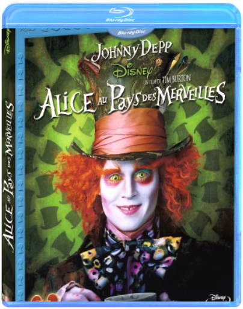
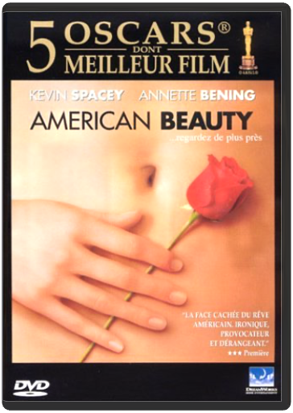
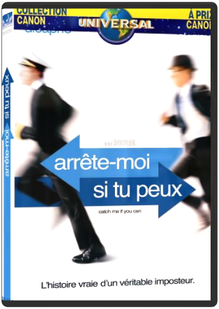
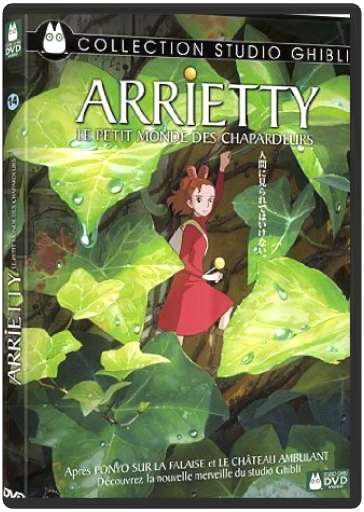
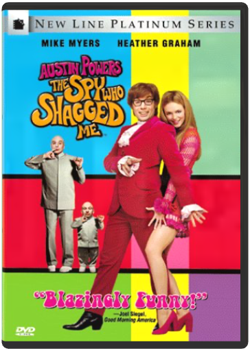

 alice au pays des merveillestim burton  Alice, désormais âgée de 19 ans, retourne dans le monde fantastique qu'elle a découvert quand elle était enfant. Elle y retrouve ses amis le Lapin Blanc, Bonnet Blanc et Blanc Bonnet, le Loir, la Chenille, le Chat du Cheshire et, bien entendu, le Chapelier Fou. Alice s'embarque alors dans une aventure extraordinaire où elle accomplira son destin : mettre fin au règne de terreur de la Reine Rouge.  american beautysam mendes Pour son premier film, Sam Mendes a réussi un coup de maître. Cynique et virulent, il s'insurge avec humour contre les prétendus préceptes du rêve américain, à travers le portrait de Lester Burnham, chômeur presque quinquagénaire, qui se remet en question et se dégage de l'emprise de sa femme. Le réalisateur dessine des personnages frustrés, désabusés, hystériques et qui se cherchent. Entre comédie et thriller, voici un film dérangeant, corrosif et désopilant, interprété par d'étonnants comédiens. En 1999, American Beauty a remporté les cinq plus prestigieux oscars à Hollywood : acteur, réalisateur, scénario, photo et film de l'année ! On regrettera que les compléments du DVD – les coulisses du tournage (22'), le story-board (61'07) commenté par Sam Mendes et le directeur photo – soient restés en anglais. Seul le commentaire audio de Mendes et de son scénariste Alan Ball est sous-titrable en français. La qualité des images est remarquable, d'une définition excellente, aux couleurs éclatantes, naturelles et contrastées. —Sophie Wittmer  arrête-moi si tu peuxsteven spielberg On aimerait ne pas pouvoir l'attraper, Léo, tant la vision de cette course-poursuite dans les golden 60's procure de plaisir ! Une histoire en or que ce destin véridique de Franck Abagnale, qui dans les années 60, de sa 15e à sa 20e année, parvient à se faire passer pour pilote de ligne à la PanAm, médecin ou avocat, tout en détournant des millions de dollars ! Un personnage fascinant, que le scénario de Jeff Nathanson restitue sous toutes ses facettes, même les moins sympathiques. Et que Steven Spielberg s'est amusé à filmer avec beaucoup de grâce et de légèreté. Brio de la reconstitution, superbe générique d'introduction, rocambolesque des situations, du buble-gum jazzy ! Alors, certes, la patte de Spielberg se fait parfois un peu plus lourde, surtout lorsqu'elle s'attaque à son obsession majeure : la famille. Mais derrière la guimauve qui inonde certaines scènes, sourd une nostalgie, une tristesse liée à l'impossibilité de retrouver ce bonheur familial perdu. Une évolution notable dans l'œuvre du réalisateur, palpable depuis AI et Minority Report. Qui permet à Leonardo Di Caprio de livrer une interprétation magistrale, à la fois solaire et ténébreuse, entre le Holden de L'Attrape-Cœurs de Salinger et le Gatsby de Fitzgerald. Deux scènes fortes en témoignent : la première rencontre Tom Hanks-Di Caprio, hilarante ; le déjeuner entre Franck et son père, très émouvant. Deux rencontres placées sous le signe du père, l'un de substitution, l'autre bien réel mais étranger à sa famille… Car c'est bien du côté de la relation paternelle que se situe le cœur de cette œuvre alerte et profonde, notamment dans cette admiration et dans cette déception mêlées entre Leo et son père Christopher Walken, bouleversant. —Sylvain Lefort  arrietty, le petit monde des chapardeurshiromasa yonebayashi Dans la banlieue de Tokyo, sous le plancher d'une vieille maison perdue au coeur d'un immense jardin, la minuscule Arrietty vit en secret avec sa famille. Ce sont des Chapardeurs. Arrietty connaît les règles : on n'emprunte que ce dont on a besoin, en tellement petite quantité que les habitants de la maison ne s'en aperçoivent pas. Plus important encore, on se méfie du chat, des rats, et interdiction absolue d'être vus par les humains sous peine d'être obligés de déménager et de perdre cet univers miniature fascinant fait d'objets détournés.Arrietty sait tout cela. Pourtant, lorsqu'un jeune garçon, Sho, arrive à la maison pour se reposer avant une grave opération, elle sent que tout sera différent. Entre la jeune fille et celui qu'elle voit comme un géant, commence une aventure et une amitié que personne ne pourra oublier'  austin powers : the spy who shagged me (import zone 1)jay roach Un opus encore plus délirant que les précédents des aventures d'Austin Powers : parodique et irrésistible, cet Espion qui m'a tirée est le film le plus drôle qu'on ait vu depuis longtemps. Son DVD est un bijou d'interactivité. Outre la magnifique copie, sublime dans ses couleurs et ses contrastes, le son en Dolby Digital 5.1 qui dépote dans tous les sens et les menus animés de toute beauté, on reste cloué sur place quand on découvre les bonus. Ça fourmille de partout ! Le commentaire audio de Mike Myers, de Jay Roach et du scénariste est en VO-ST. Mais ce sont surtout les 21 scènes coupées qui retiennent notre attention. On peut même se demander pourquoi elles ne sont pas incluses dans le métrage final tant elles sont à mourir de rire. Par ailleurs, le making-of est vraiment très complet et passionnant. Enfin, un bonus de taille se cache subtilement dans l'un des menus… —Pascal Goubereau |  Batman : The Dark Knight (Edition Collector 2 DVD)  Il y a huit ans, Batman a disparu dans la nuit : lui qui était un héros est alors devenu un fugitif. S'accusant de la mort du procureur-adjoint Harvey Dent, le Chevalier Noir a tout sacrifié au nom de ce que le commissaire Gordon et lui-même considéraient être une noble cause. Et leurs actions conjointes se sont avérées efficaces pour un temps puisque la criminalité a été éradiquée à Gotham City grâce à l'arsenal de lois répressif initié par Dent. Mais c'est un chat - aux intentions obscures - aussi rusé que voleur qui va tout bouleverser. À moins que ce ne soit l'arrivée à Gotham de Bane, terroriste masqué, qui compte bien arracher Bruce à l'exil qu'il s'est imposé. Pourtant, même si ce dernier est prêt à endosser de nouveau la cape et le casque du Chevalier Noir, Batman n'est peut-être plus de taille à affronter Bane... |

Julien
Collection Total:
1 897 Items
1 897 Items
Last Updated:
Oct 30, 2021
Oct 30, 2021


 Made with Delicious Library
Made with Delicious Library